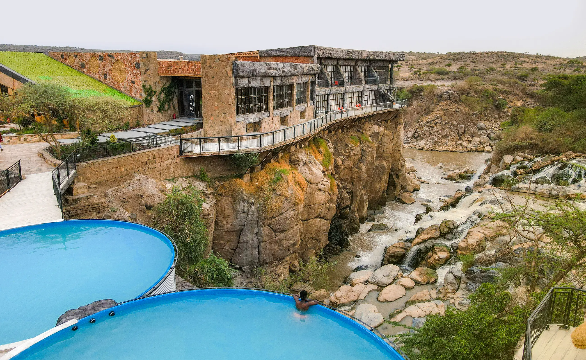
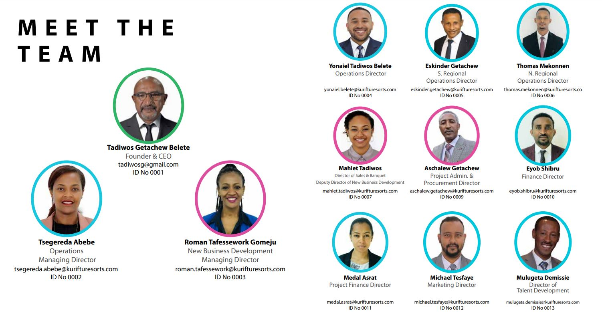

First-Ever Water Amusement Park
Date: January 1, 2023
Kuriftu Resort & Spa inaugurated the nation's first-ever water amusement park in Bishoftu on August 31, 2019. The park, lying on 72,000Sqm of land, features a water play area and 123 international shopping outlets.
The water park rests on a 19,700sqm plot, while the shopping centre lies on the remaining 52,300Sqm. The water amusement park serves adults and kids and has a capacity of accommodating 5,000 visitors daily, charging 700 Br for kids and 840 Br for adults.
The expansion, done with the main purpose of providing entertainment activities for Ethiopian and African diaspora, gives international standard services, said Tadios Getachew, CEO of Kuriftu.
The resort has 108 rooms, three restaurants, four conference halls, a spa and wellness centre, hair salons, table tennis, volleyball, fishing and a swimming pool. The water park can accommodate 1,980 people at one time and creates job opportunities for 1,000 people.
The park targets tourists coming to the country. In addition, it also plans to attract residents in the local area through various features such as the water play areas, swimming pools, water slides and water playgrounds.
Besides the village, Kuriftu has five operational resorts and hotels in Bishoftu, Bahir Dar, Semera, Langano and Adama, while the construction of three more resorts is underway.

The Gheralta Resort, located in the mountainous parts of Tigray, Burayu Kuriftu Africa Village in Oromia Regional State, and its first overseas branch on Moucha Island, Djibouti, are the projects under construction by Kuriftu.Kuriftu also built a 14,000Sqm foundation to eventually build 200 extra rooms and a convention centre at its Bishoftu resort.
Experts in the area believe that the hotel expansion of Kuriftu will add value to the economy, as it will attract non-national visitors.
“The country’s tourism market segment is focused on different historical places,” said Fisseha Aseres, a hotel and tourism consultant.
“Kuriftu’s expansion opens the door for new market strategies," added Fisseha.
The expert believes that Kuriftu’s initiative will encourage other hotel owners to expand their services into new areas.
Boston Partners PLC (Kuriftu Resorts)
Date: February 15, 2023
Boston Partners PLC, the parent company of Kuriftu Resort, was established in 2002 and is a leader in the Ethiopian hospitality industry. As a company, we aim to be progressive by developing Ethiopia’s unique destinations through creative designs, unmatched marketing, and a true passion for service.
The latest initiative of Boston Partners PLC is to spearhead a promotional campaign to promote Inter-African Tourism with a focus on fostering a new mindset for the travel market.
 WHAT MAKES US UNIQUE?
WHAT MAKES US UNIQUE?
We are a company solely owned and operated by Africans
We provide permanent employment opportunities to 2000+ people thus far
We support local businesses by purchasing from the communities that neighbor our resorts
We are a Strategic Partner of Ethiopian Airlines and Ethiopias Tourism Organization
We produce all furniture in-house as well as other culturally artisanal design elements of our resorts (Thatched Roof, Woodwork, Leather Braiding, Stonework etc.)
We design all of our resorts in-house and construct them with our own construction team
Our CEO is an active member of the Ethiopian Board of Tourism
71% of our line staff are females as well as 78% of our corporate team
62% of all line staff emerge from our construction team
80% of our hiring is done within the local community of each resort
100% of our staff join our company with zero work experience, including management

© 2023 Kuriftu. All rights reserved.